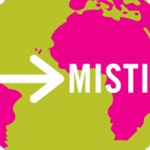
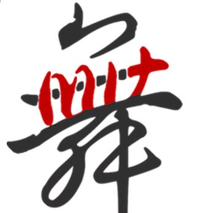
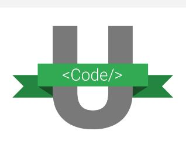

One thing I'm passionate about is making the world happier, whether it's helping other people, innovating exciting things, or fixing a few of the many problems that we can't escape.
I believe coding is powerful and can achieve all the above.
Thanks for visiting.
Skills
Python
Java
HTML & CSS
JavaScript
ROS
Academic Coursework
Freshman Fall
> 18.02 - Multivariable Calculus
> 8.01 - Classical Mechanics
> 7.012 - Introduction to Biology
> STS.034 - Science Communication
Freshman IAP
> 6.149 - Introduction to Python
Freshman Spring
> 6.01 - Introduction to EECS I
> 5.111 - Principles of Chemical Science
> 8.02 - Electricity and Magnetism
> 24.01 - Classics of Western Philosophy
Junior Fall
> 6.034 - Artificial Intelligence
> 6.036 - Introduction to Machine Learning
> 6.046 - Design and Analysis of Algorithms
> 21G.107 - Streamlined Chinese I
Junior Spring
> 6.831 - User Interface Design & Implementation
> 6.033 - Computer System Engineering
> TBD
Sophomore Fall
> 6.009 - Fundamentals of Programming
> 6.004 - Computation Structures
> 6.042 - Mathematics for Computer Science
> 21G.501 - Japanese I
Sophomore Spring
> 6.006 - Introduction to Algorithms
> 6.031 - Elements of Software Construction
> 9.00 - Introduction to Psychological Science t
> 21G.502 - Japanese II
Experiences
Here are some things I've done, which include work experience, activities, and leadership roles.
Work Experience
MIT CSAIL Lab
Undergrad Researcher | Jun-Aug 2017
Testing and analyzing sensors and their performance for improvement of positioning of small vehicles like quadcopters and small rovers
Measured variance of ultra-wide band sensors using ROS and Python
Setting up experiments to pair ultra-wide band sensors with GPS sensors to improve localization of small vehicles

MISTI Hong Kong
Undergrad Researcher | Jun-Aug 2016
Experimented with a Convolutional Neural Network (CNN) Python model to yield best possible time spent and accuracy in training digits and cells data
Increased accuracy in training by tweaking parameters in the code and learned about machine learning and computer skills
Boeing HS Internship
Phantom Phoenix Intern | Jun-Aug 2014
Designed a small satellite for the monitoring of earth albedo in a mock project through collaboration with my intern team of 4 and the Boeing Phantom Works division
Developed experience in teamwork, project management and spacecraft subsystems and analysis
Activities and Leadership
MIT Women in EECS
Community Events Committee | Aug 2017-present
Planning budgets and logistics as well as executing community events to support and engage our community of women in EECS on campus in a team of 3
Organizing events that include lightning talks, workshops, movie/game nights, and mixers with other colleges/other women in engineering clubs on campus to bring passionate women together and encourage support of each other

MIT Asian Dance Team
Choreographer | Feb 2017-present
Led a weekly workshop series for Kpop choreography and techniques open to anyone on campus aimed to improve beginning-intermediate dancers
Teaching 25+ dancers a dance that will be performed at our semesterly showcase
Dancing Kpop and traditional Asian dances

Google CodeU Program
Participant | Feb-May 2017
Designed and improved a basic chat application in a team of 3 students, adding features including username and password login, simple cryptography, and database persistence
Participated in regular code reviews and technical coding practices with Google engineers and learned industry best practices
MIT Undergraduate Practice Opportunities Program
Participant | Oct 2016-present
Participating in a yearlong professional development program preparing sophomores for success in the workplace
Completed an intensive 1-week professional development workshop taught by MIT faculty and industry professionals, exploring topics such as effective communication, foundational decision-making, and teamwork
MIT Code For Good
Consulting Team | Oct 2016-Feb 2017
Collaborated in a small team to assist our nonprofit (Green Streets Initiative) with technical issues
Created an employer interface on our nonprofit’s website, utilizing Python, Django, and HTML and CSS, so that employers participating in their program, Walk/Ride Day, can access their individual company’s statistics
Communicated with our nonprofit to provide solutions and suggestions to any requests for new features/improvements
WHS Vex Robotics
Programmer | Sept 2013-Jun 2015
Wrote code for our competition and demo robots, showcased at competitions, outreach eventsand demos at local schools and fairs
Taught basic RobotC programming and building skills to 20+ students during our “Robocamp” for two summers
Demonstrated teamwork, time management, and communication skills to grow as a team and achieve team goals
Hobbies
Outside of classes, you can probably find me doing one of the following...
I like to do arts and crafts, like making star jars as gifts, folding origami, and making cards for random occasions. I like to dance. I'm on my school's Asian Dance Team and like learning various pieces I find on YouTube with friends. I love playing the piano, clarinet, and learning new instruments. I like to travel to pretty, interesting places...I dream to see an aurora and a clear, star speckled sky one day. I also love cooking, watching shows/movies, doing jigsaw puzzles, taking pictures of everything, enjoying the sunset, hanging with friends and family, and drinking tea. I love milk tea and macaroni and cheese!
You may also find me just staring blank at a random object daydreaming. I try to appreciate every moment as much as possible because all these moments make up our lives.